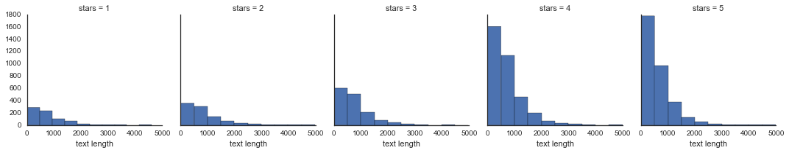
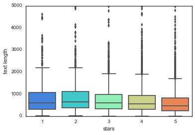
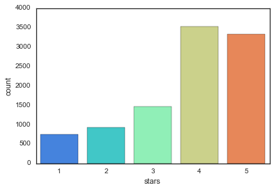

NLP Yelp Reviews
In this NLP project, we will be attempting to classify Yelp Reviews into 1 star or 5 star categories based on the text content in the reviews. We will also build a data pipeline that will help us automate the preparation and analytics of the data.
We will use the Yelp Review Data Set from Kaggle.
Each observation in this dataset is a review of a particular business by a particular user.
The “stars” column is the number of stars (1 through 5) assigned by the reviewer to the business. (Higher stars is better.) In other words, it is the rating of the business by the person who wrote the review.
The “cool” column is the number of “cool” votes this review received from other Yelp users.
All reviews start with 0 “cool” votes, and there is no limit to how many “cool” votes a review can receive. It is a rating of the review itself, not a rating of the business.
The “useful” and “funny” columns are similar to the “cool” column.
Let’s get started!
First Step: Importing the necessary libraries for our analysis.
Imports
**Import the usual suspects. :) **
import numpy as np
import pandas as pdThe Data
Read the yelp.csv file and set it as a dataframe called yelp.
yelp = pd.read_csv('yelp.csv')** Check the head, info , and describe methods on yelp.**
yelp.head()| business_id | date | review_id | stars | text | type | user_id | cool | useful | funny | |
|---|---|---|---|---|---|---|---|---|---|---|
| 0 | 9yKzy9PApeiPPOUJEtnvkg | 2011-01-26 | fWKvX83p0-ka4JS3dc6E5A | 5 | My wife took me here on my birthday for breakf... | review | rLtl8ZkDX5vH5nAx9C3q5Q | 2 | 5 | 0 |
| 1 | ZRJwVLyzEJq1VAihDhYiow | 2011-07-27 | IjZ33sJrzXqU-0X6U8NwyA | 5 | I have no idea why some people give bad review... | review | 0a2KyEL0d3Yb1V6aivbIuQ | 0 | 0 | 0 |
| 2 | 6oRAC4uyJCsJl1X0WZpVSA | 2012-06-14 | IESLBzqUCLdSzSqm0eCSxQ | 4 | love the gyro plate. Rice is so good and I als... | review | 0hT2KtfLiobPvh6cDC8JQg | 0 | 1 | 0 |
| 3 | _1QQZuf4zZOyFCvXc0o6Vg | 2010-05-27 | G-WvGaISbqqaMHlNnByodA | 5 | Rosie, Dakota, and I LOVE Chaparral Dog Park!!... | review | uZetl9T0NcROGOyFfughhg | 1 | 2 | 0 |
| 4 | 6ozycU1RpktNG2-1BroVtw | 2012-01-05 | 1uJFq2r5QfJG_6ExMRCaGw | 5 | General Manager Scott Petello is a good egg!!!... | review | vYmM4KTsC8ZfQBg-j5MWkw | 0 | 0 | 0 |
yelp.info()<class 'pandas.core.frame.DataFrame'>
RangeIndex: 10000 entries, 0 to 9999
Data columns (total 10 columns):
business_id 10000 non-null object
date 10000 non-null object
review_id 10000 non-null object
stars 10000 non-null int64
text 10000 non-null object
type 10000 non-null object
user_id 10000 non-null object
cool 10000 non-null int64
useful 10000 non-null int64
funny 10000 non-null int64
dtypes: int64(4), object(6)
memory usage: 781.3+ KB
yelp.describe()| stars | cool | useful | funny | |
|---|---|---|---|---|
| count | 10000.000000 | 10000.000000 | 10000.000000 | 10000.000000 |
| mean | 3.777500 | 0.876800 | 1.409300 | 0.701300 |
| std | 1.214636 | 2.067861 | 2.336647 | 1.907942 |
| min | 1.000000 | 0.000000 | 0.000000 | 0.000000 |
| 25% | 3.000000 | 0.000000 | 0.000000 | 0.000000 |
| 50% | 4.000000 | 0.000000 | 1.000000 | 0.000000 |
| 75% | 5.000000 | 1.000000 | 2.000000 | 1.000000 |
| max | 5.000000 | 77.000000 | 76.000000 | 57.000000 |
Create a new column called “text length” which is the number of words in the text column.
yelp['text length'] = yelp['text'].apply(len)EDA
Let’s explore the data
Imports
Import the data visualization libraries if you haven’t done so already.
import matplotlib.pyplot as plt
import seaborn as sns
sns.set_style('white')
%matplotlib inlineUse FacetGrid from the seaborn library to create a grid of 5 histograms of text length based off of the star ratings. Reference the seaborn documentation for hints on this
g = sns.FacetGrid(yelp,col='stars')
g.map(plt.hist,'text length')<seaborn.axisgrid.FacetGrid at 0x121e705f8>

Create a boxplot of text length for each star category.
sns.boxplot(x='stars',y='text length',data=yelp,palette='rainbow')<matplotlib.axes._subplots.AxesSubplot at 0x121283470>

Create a countplot of the number of occurrences for each type of star rating.
sns.countplot(x='stars',data=yelp,palette='rainbow')<matplotlib.axes._subplots.AxesSubplot at 0x12578fc88>

** Use groupby to get the mean values of the numerical columns, you should be able to create this dataframe with the operation:**
stars = yelp.groupby('stars').mean()
stars| cool | useful | funny | text length | |
|---|---|---|---|---|
| stars | ||||
| 1 | 0.576769 | 1.604806 | 1.056075 | 826.515354 |
| 2 | 0.719525 | 1.563107 | 0.875944 | 842.256742 |
| 3 | 0.788501 | 1.306639 | 0.694730 | 758.498289 |
| 4 | 0.954623 | 1.395916 | 0.670448 | 712.923142 |
| 5 | 0.944261 | 1.381780 | 0.608631 | 624.999101 |
Use the corr() method on that groupby dataframe to produce this dataframe:
stars.corr()| cool | useful | funny | text length | |
|---|---|---|---|---|
| cool | 1.000000 | -0.743329 | -0.944939 | -0.857664 |
| useful | -0.743329 | 1.000000 | 0.894506 | 0.699881 |
| funny | -0.944939 | 0.894506 | 1.000000 | 0.843461 |
| text length | -0.857664 | 0.699881 | 0.843461 | 1.000000 |
Then use seaborn to create a heatmap based off that .corr() dataframe:
sns.heatmap(stars.corr(),cmap='coolwarm',annot=True)<matplotlib.axes._subplots.AxesSubplot at 0x120edb828>

NLP Classification Task
Let’s move on to the actual task. To make things a little easier, go ahead and only grab reviews that were either 1 star or 5 stars.
Create a dataframe called yelp_class that contains the columns of yelp dataframe but for only the 1 or 5 star reviews.
yelp_class = yelp[(yelp.stars==1) | (yelp.stars==5)]** Create two objects X and y. X will be the ‘text’ column of yelp_class and y will be the ‘stars’ column of yelp_class. (Your features and target/labels)**
X = yelp_class['text']
y = yelp_class['stars']Import CountVectorizer and create a CountVectorizer object.
from sklearn.feature_extraction.text import CountVectorizer
cv = CountVectorizer()** Use the fit_transform method on the CountVectorizer object and pass in X (the ‘text’ column). Save this result by overwriting X.**
X = cv.fit_transform(X)Train Test Split
Let’s split our data into training and testing data.
** Use train_test_split to split up the data into X_train, X_test, y_train, y_test. Use test_size=0.3 and random_state=101 **
from sklearn.model_selection import train_test_splitX_train, X_test, y_train, y_test = train_test_split(X, y,test_size=0.3,random_state=101)Training a Model
Time to train a model!
** Import MultinomialNB and create an instance of the estimator and call is nb **
from sklearn.naive_bayes import MultinomialNB
nb = MultinomialNB()Now fit nb using the training data.
nb.fit(X_train,y_train)MultinomialNB(alpha=1.0, class_prior=None, fit_prior=True)
Predictions and Evaluations
Time to see how our model did!
Use the predict method off of nb to predict labels from X_test.
predictions = nb.predict(X_test)** Create a confusion matrix and classification report using these predictions and y_test **
from sklearn.metrics import confusion_matrix,classification_reportprint(confusion_matrix(y_test,predictions))
print('\n')
print(classification_report(y_test,predictions))[[159 69]
[ 22 976]]
precision recall f1-score support
1 0.88 0.70 0.78 228
5 0.93 0.98 0.96 998
avg / total 0.92 0.93 0.92 1226
Great! Let’s see what happens if we try to include TF-IDF to this process using a pipeline.
Using Text Processing
** Import TfidfTransformer from sklearn. **
from sklearn.feature_extraction.text import TfidfTransformer** Import Pipeline from sklearn. **
from sklearn.pipeline import Pipeline** Now create a pipeline with the following steps:CountVectorizer(), TfidfTransformer(),MultinomialNB()**
pipeline = Pipeline([
('bow', CountVectorizer()), # strings to token integer counts
('tfidf', TfidfTransformer()), # integer counts to weighted TF-IDF scores
('classifier', MultinomialNB()), # train on TF-IDF vectors w/ Naive Bayes classifier
])Using the Pipeline
Time to use the pipeline! Remember this pipeline has all your pre-process steps in it already, meaning we’ll need to re-split the original data (Remember that we overwrote X as the CountVectorized version. What we need is just the text
Train Test Split
Redo the train test split on the yelp_class object.
X = yelp_class['text']
y = yelp_class['stars']
X_train, X_test, y_train, y_test = train_test_split(X, y,test_size=0.3,random_state=101)Now fit the pipeline to the training data. Remember you can’t use the same training data as last time because that data has already been vectorized. We need to pass in just the text and labels
# May take some time
pipeline.fit(X_train,y_train)Pipeline(steps=[('bow', CountVectorizer(analyzer='word', binary=False, decode_error='strict',
dtype=<class 'numpy.int64'>, encoding='utf-8', input='content',
lowercase=True, max_df=1.0, max_features=None, min_df=1,
ngram_range=(1, 1), preprocessor=None, stop_words=None,
strip_...f=False, use_idf=True)), ('classifier', MultinomialNB(alpha=1.0, class_prior=None, fit_prior=True))])
Predictions and Evaluation
** Now use the pipeline to predict from the X_test and create a classification report and confusion matrix. You should notice strange results.**
predictions = pipeline.predict(X_test)print(confusion_matrix(y_test,predictions))
print(classification_report(y_test,predictions))[[ 0 228]
[ 0 998]]
precision recall f1-score support
1 0.00 0.00 0.00 228
5 0.81 1.00 0.90 998
avg / total 0.66 0.81 0.73 1226
/Users/marci/anaconda/lib/python3.5/site-packages/sklearn/metrics/classification.py:1074: UndefinedMetricWarning: Precision and F-score are ill-defined and being set to 0.0 in labels with no predicted samples.
'precision', 'predicted', average, warn_for)
Looks like Tf-Idf actually made things worse!